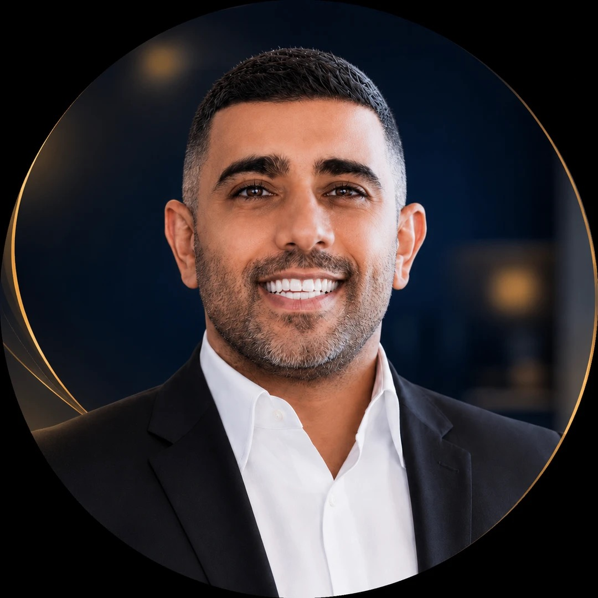

מחבר בין שליחות חינוכית, ניסיון ניהולי, יזמות מעשית ואמונה גדולה באנשים. חינוך הוא לא רק מקצוע — אלא דרך חיים, שליחות ואחריות.
הסיפור שלי
מגיל צעיר ידעתי שהחיים שלי קשורים בחינוך, באנשים ובשליחות. ראיתי סביבי אנשים שמקדישים את החיים שלהם לילדים, לקהילה, להוראה ולהשפעה, ומשם צמח בי הרצון להיות אדם שמחבר, מלמד, מדריך ומרים אנשים.
למדתי חינוך, הוצאתי תואר ראשון ותעודת הוראה, והתחלתי לבנות את עצמי כמורה וכאיש חינוך. הבנתי שחינוך הוא לא רק להעביר חומר — חינוך הוא לראות ילד, להבין צוות, להרגיע הורה, להחזיק מערכת, לזהות קושי ולבנות אמון.
היום, אחרי שנים של ניסיון בשטח, אני רואה את עצמי כאיש חינוך ויזם — אדם שבא מעולם ההוראה והשליחות, עבר דרך הניהול והיזמות, ומחבר בין לב, שכל, מערכת ואמונה.
גדילה בבית ובסביבה של תורה, חינוך, רבנים ומורים. משם נולד החיבור העמוק לעולם ההוראה והשליחות.
לימודי חינוך, תואר ראשון ותעודת הוראה. בניית זהות כמורה וכאיש חינוך. תחילת הדרך העצמאית.
עבודה כמורה, מדריך ואיש שטח עם ילדים ונוער. הבנה שחינוך אמיתי מתחיל בקשר אישי, אמון וראיית הילד.
שליחות בקהילות יהודיות בחו״ל, מתוך תחושת אחריות לזהות יהודית, קהילה וחיבור לעם ישראל. הבנה שהחינוך הוא שליחות חיים.
מעבר לתפקידי ריכוז, ניהול אזור, ניהול צוותים וניהול מערכות חינוך בלתי פורמליות. ניהול אנשים, בניית אמון והתמודדות עם משברים.
הקמת וניהול מסגרות, צהרונים, קייטנות, חוגים ותכניות חינוכיות. בניית פעילות עסקית־חינוכית מהשטח ועד ניהול מלא — שיווק, מכירות, תפעול, כספים, קשר עם רשויות.
הובלת "כפיר תכניות" — צהרונים, קייטנות, העשרה בספורט לבתי ספר. הרחבה לדובאי וסין. חיבור בין אמונה, אנשים, חינוך, ניהול ויזמות.
חינוך מתחיל ברגע שרואים את הילד כמו שהוא — לא רק כתלמיד, אלא כאדם שלם עם עולם פנימי, חלומות ופוטנציאל.
חינוך הוא לא מקצוע — אלא שליחות חיים. אחריות לבנות מערכות שמגדלות ילדים, צוותים וקהילות.
לקחת צוות מבולבל ולתת לו כיוון. לקחת אדם ולהראות לו שהוא מסוגל יותר. ניהול מתוך אמון והכלה.
לקחת רעיון ולהפוך אותו למערכת חיה. מהשטח, דרך התכנון, ועד לפעילות שעובדת יום יום.
חיבור עמוק לתורה, למסורת ולעם ישראל. חינוך שמחבר בין שורשים, זהות ומשמעות.
חינוך ישראלי ויהודי שחוצה גבולות. הרחבת הפעילות לדובאי ולסין מתוך אמונה בחינוך אוניברסלי.
החיים שלי הם מסע של חינוך: להיות מורה, להיות מדריך, להיות שליח, להיות יזם — ובעיקר, להיות אדם שמאמין באנשים, בילדים, בצוותים וביכולת שלהם לגדול.— אמיתי לוי
הקמה, ניהול והובלת צהרונים ומסגרות חינוכיות לילדים, עם דגש על איכות חינוכית, בטיחות וקשר עם הורים.
תכנון והפעלת קייטנות בחופשות — חוויות חינוכיות, ספורטיביות וחברתיות לילדים ונוער.
תכניות העשרה ספורטיביות לבתי ספר — חינוך גופני, חוגים ופעילויות שמחזקות גוף ונפש.
הדרכת צוותים חינוכיים, ליווי מנהלים ומדריכים, בניית תרבות ארגונית חינוכית ופיתוח מקצועי.
ייעוץ, הקמה וליווי של מיזמים חינוכיים — מרעיון ראשוני ועד למערכת חיה ופועלת.
הרחבת הפעילות החינוכית לשווקים בינלאומיים — דובאי, סין ועוד. חינוך ישראלי שחוצה גבולות.
מעוניינים בשיתוף פעולה, הרצאה, ייעוץ או סתם לשמוע עוד? אשמח לשמוע מכם.